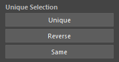

Component Selecter
Overview
A tool to assist in selecting Vertex, NurbsCurveCV, NurbsSurfaceCV, and LatticePoint. Mainly provides the following features:
- Reselect components in SoftSelection, SymmetrySelection state
- Invert selection
- Select components at same position as mesh
- Area selection of components
- Area selection of CVs
Each component can be selected across multiple geometries.
How to Launch
Launch the tool from the dedicated menu or with the following command.
import faketools.tools.rig.component_selecter_ui
faketools.tools.rig.component_selecter_ui.show_ui()
Unique Selection
Reselects components in various ways.

Unique
Reselects selected components from SoftSelection, SymmetrySelection state.
To select, follow these steps:
- Select components in SoftSelection, SymmetrySelection mode.
- Press
Uniquebutton.
※ You can toggle each mode with
Toggle Soft Selection and
Toggle Symmetry Selection in the Edit
menu.

Reverse
Inverts selected components.
Same
Selects components at the same position as the mesh.
To select, follow these steps:
- Select mesh.
- Add select components.
- Press
Samebutton.
Area Selection

Performs area selection of components. Can select right, left, and center areas based on the YZ plane.
To select, follow these steps:
- Select geometryShape derivative nodes or their transform nodes (multiple selection allowed).
- Press the button for the area you want to select
(
Right,Center,Left).
CV Area Selection

Performs area selection of CVs.
To select, follow these steps:
- Select nurbsCurve, nurbsSurface derivative nodes or their transform nodes (multiple selection allowed).
- For nurbsSurface, select
uorvdirection. - Specify selection range with max and min spin boxes.
- Press
Selectbutton.
For example, if you select nurbsCurve, enter 2 for
max and 0 for min, and
press Select button, CVs 0 to 2 will be
selected.